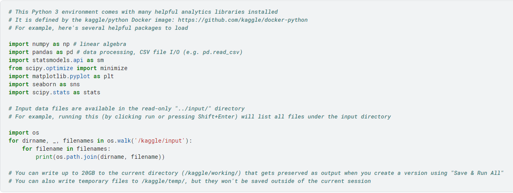
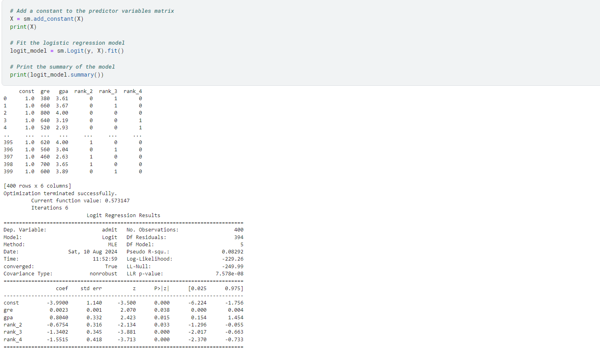
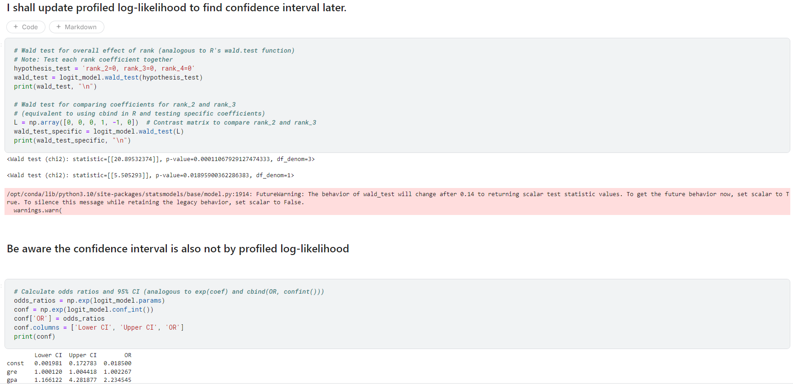

Objective
It is for my interest to set up Python version for UCLA logit regression analysis.
Challenge(s) and Solution(s)
I need to figure out profiled log-likelihood to calculate confidence interval as no common package provides such function.
I havent done the coding for it yet and if anyone has seen this and had great interest to code it then I am so grateful. I assure you I will get the final version done when I have spare time.
Tool(s)
 ↖ Click to view on GitHub
↖ Click to view on GitHub
Project Highlights
Required Package

Summary of Using The Logit Model

Need CIs Using Profiled Log-likelihood
